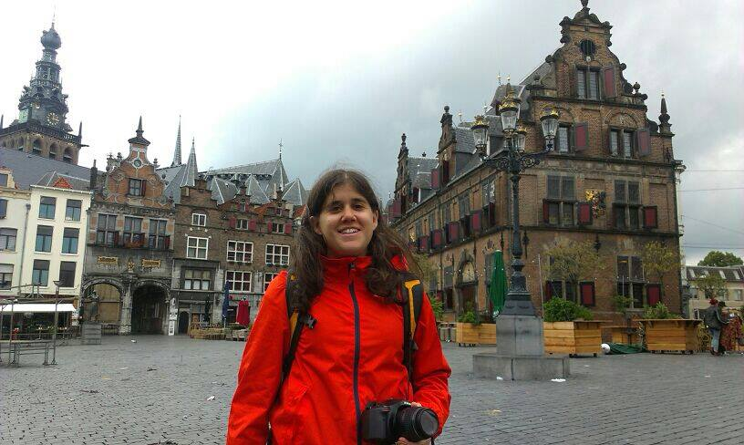

Rocío Gómez
En este espacio web voy a hablar sobre mi espero que os guste
Pero antes voy a hacer una pequeña descripción
Aficiones
- Me gusta escuchar música.
- Me gusta ir al cine.
- Me gusta jugar al fútbol
- Me gusta salir con mis amigos.
Estudios
- Título de bachillerato en colegio Padre Piquer.
- Técnico Superior en Imagen en la escuela CES.
- Curso en cámara e iluminación de cine y tv.
- Curso adalab programación web.
Vida laboral
Como tod@s sabemos trabajar en España ahora mismo está complicado pero aún así he tenido algún que otro trabajo:He trabajado como cajera en un supermercado, de camarera, de socorrista y también cuidando niños.Pero también he hecho trabajos audiovisuales, pero para no aburriros contando que trabajos he hecho os pongo un enlace de una web donde aparecen algunos de ellos.
Conocer más sobre mis trabajos es un link sin subrayadoComo he puesto en mis aficiones me gusta el fútbol pero también otros muchos deportes voy a hacer una tabla para explicaros que deportes me gustan más y porqué:
Fútbol
Es el que más me gusta
Me gusta porque me parece un deporte muy entretenido.

Baloncesto
Es mi segundo deporte favorito
Me gusta porque iba de pequeña a ver al estudiantes. Y la nba es muy interesante.

Balonmano
Me gusta verlo de vez en cuando
Me gusta porque tengo un amigo que juega en segunda división y voy a verle muchas veces.
Voley
Me gusta jugarlo y verlo
Me gusta porque me recuerda al verano. En los juegos olímpicos ha estado muy reñido.

Me llamo Rocío Gómez tengo 25 años soy de Madrid. Vivo con mis padres en la zona de chamartin, tengo una hermana pequeña que se llama Blanca. Para descubir más sobre mi tendréis que leer esta página. Ánimo!